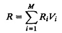
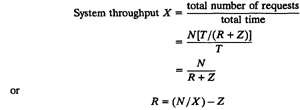
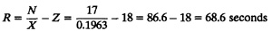
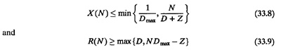
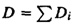
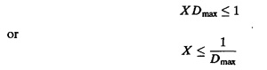
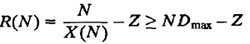
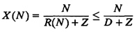
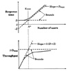
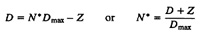

| Previous | Table of Contents | Next |
Substituting for Qi from Equation (33.5) yields
XR = X1R1 + X2R2 + ... + XMRM
Dividing both sides of this equation by X and using the forced flow law, we get
R = V1R1 + V2R2 + ... + VMRM
or

This is called the general response time law. It is possible to show that this law holds even if the job flow is not balanced. Intuitively, the law states that the total time spent by a job at a server is the product of time per visit and the number of visits to the server; and the total time in the system is equal to the sum of total times at various servers.
VCPU = 181, VA = 80, VB = 100
RCPU = 0.250, RA = 0.203, RB = 0.071
In an interactive system, the users generate requests that are serviced by the central subsystem and responses come back to the terminal. After a think time Z, the users submit the next request. If the system response time is R, the total cycle time of requests is R + Z. Each user generates about T/(R + Z) requests in time period T. If there are N users,

This is the interactive response time law.
X = 0.1963, N = 17, Z = 18

One consequence of the forced flow law is that the device utilizations are proportional to their respective total service demands:
Ui ∝ Di
The device with the highest total service demand Di has the highest utilization1 and is called the bottleneck device. This device is the key limiting factor in achieving higher throughput. Improving this device will provide the highest payoff in terms of system throughput. Improving other devices will have little effect on the system performance. Therefore, identifying the bottleneck device should be the first step in any performance improvement project.
1Delay centers can have utilizations more than one without any stability problems. Therefore, delay centers cannot be a bottleneck device. Only queueing centers should be considered in finding the bottleneck or computing Dmax.
Suppose we find that the device b is the bottleneck. This implies that Db = Dmax is the highest among D1, D2,...,DM. Then the throughput and response times of the system are bound as follows:

Here,  is the sum of total service demands on all devices except terminals. Equations (33.8) and (33.9) are known as asymptotic bounds. The proof follows.
Ub = XDmax

R(1) = D1 + D2 + ... + DM = D
| R(N) ≥ D | (33.11) |

and


FIGURE 33.3 Typical asymptotic bounds.
Figure 33.3 shows asymptotic bounds for a typical case. As shown in the figure, both throughput and response time bounds consist of two straight lines. The response time bounds consist of a horizontal straight line at R = D and a line passing through the point (-Z,O) at a slope of Dmax. The throughput bounds consist of a horizontal straight line at X = 1/Dmax. and a line passing through the origin at a slope of 1/(D + Z). The point of intersection of the two lines is called the knee. For both response time and throughput, the knee occurs at the same value of number of users. The number of jobs N* at the knee is given by

If the number of jobs is more than N*, then we can say with certainty that there is queueing somewhere in the system.
| Previous | Table of Contents | Next |
){kind=link}
){kind=link}